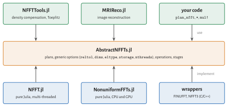

Abstract Interface
AbstractNFFTs.jl defines what an NFFT plan is, independent of how it is computed. NFFT.jl is one implementation, NonuniformFFTs.jl is another. Other libraries can implement the interface themselves; code written against it runs with each of them. The comparison of NFFT.jl with FINUFFT, ducc and NonuniformFFTs.jl on the Performance page uses its own benchmark harness (benchmark/ in the repository), not this interface.

Backends
Each implementation has a backend type. Loading NFFT.jl activates its backend; others are chosen explicitly, globally or within a scope:
plan_nfft(k, N) # active backend
plan_nfft(NFFT.backend(), k, N) # explicit backend
AbstractNFFTs.set_active_backend!(NFFT.backend())
NFFT.activate!() # the same, by convention
with(nfft_backend => OtherPackage.backend()) do # within a scope
nfft(k, f)
endOptions: generic and specific
Plan constructors take two kinds of keyword arguments:
Generic options mean the same for every implementation and must be accepted by all of them:
keyword meaning reltolrequested relative error ($\ell^2$ over random data), default 1e-8dimsdimensions to transform: :, an integer or a contiguous range; the others are batch dimensionseltypereal element type of the data, default from the nodes storagearray type of data and workspace ( Array, a GPU array type), default from the nodesnthreadsnumber of CPU threads, default Threads.nthreads()Specific options belong to one implementation, such as
W,σandwindowof NFFT.jl. An implementation must reject options it does not know with anArgumentError, never ignore them silently. Code that uses only generic options is portable.
Operations
| function | meaning |
|---|---|
mul!(fHat, p, f), p * f | NFFT |
mul!(f, adjoint(p), fHat), adjoint(p) * fHat | adjoint NFFT (transpose for NFCT/NFST) |
size_in(p), size_out(p), size(p) | array sizes; size(p) is the matrix size |
nodes(p), nodes!(p, k) | query and exchange the nodes |
accuracy(p) | predicted relative error |
nfft(k, f), nfft_adjoint(k, N, fHat), … | one-shot functions that create a plan |
The stage interface is optional and meant for implementations that are built from the three classical stages.
Writing an implementation
An implementation defines a backend, a plan type and the operations:
struct MyBackend <: AbstractNFFTBackend end
activate!() = AbstractNFFTs.set_active_backend!(MyBackend())
backend() = MyBackend()
mutable struct MyPlan{T,D,R} <: AbstractNFFTPlan{T,D,R}
...
end
function AbstractNFFTs.plan_nfft(b::MyBackend, k::AbstractMatrix, N::Dims; kwargs...)
g, rest = generic_options(k, N; kwargs...) # reltol, dims, eltype, storage, nthreads
check_options(b, rest, (:myoption,)) # reject everything else
...
end
AbstractNFFTs.size_in(p::MyPlan) = ...
AbstractNFFTs.size_out(p::MyPlan) = ...
AbstractNFFTs.nodes(p::MyPlan) = ...
AbstractNFFTs.nodes!(p::MyPlan, k) = ...
AbstractNFFTs.accuracy(p::MyPlan) = ...
LinearAlgebra.mul!(fHat, p::MyPlan, f) = ...
LinearAlgebra.mul!(f, p::Adjoint{<:Complex,<:MyPlan}, fHat) = ...In the type parameters, T is the real element type of the data, D the number of dimensions of the input and R that of the output (R = 1 without batch dimensions). Everything else, *, nfft, size, ChainRules, is derived from these functions.
The test suite of NFFT.jl contains contract tests (test/contract.jl) that check an implementation against the NDFT, for several tolerances reltol and with batch dimensions (dims); they take a plan constructor as an argument and can be run against any backend.